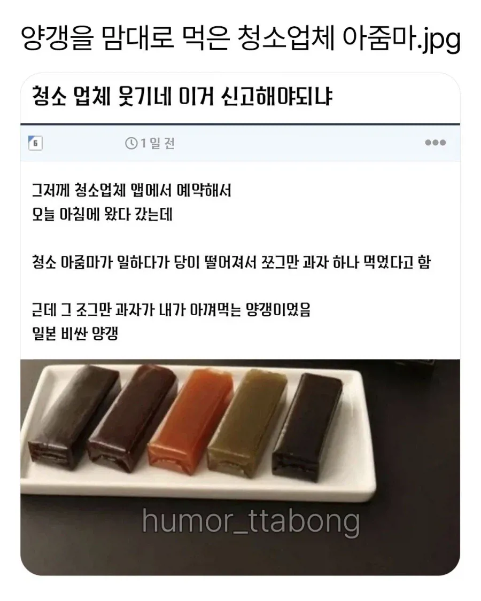
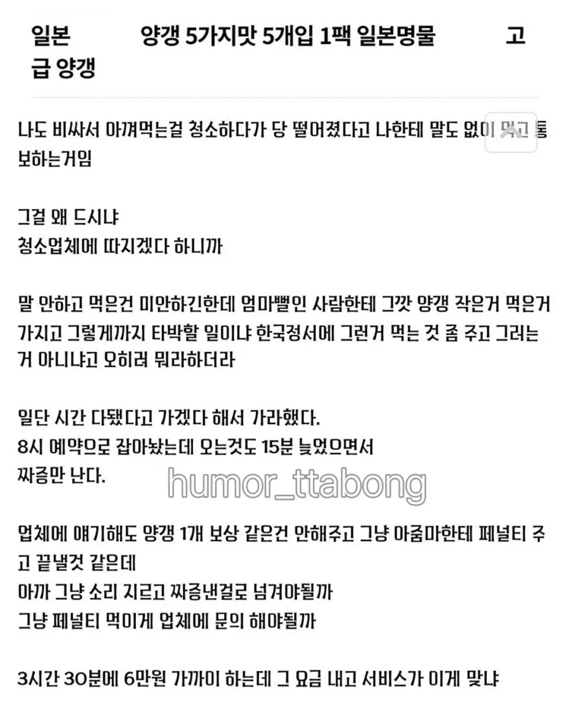
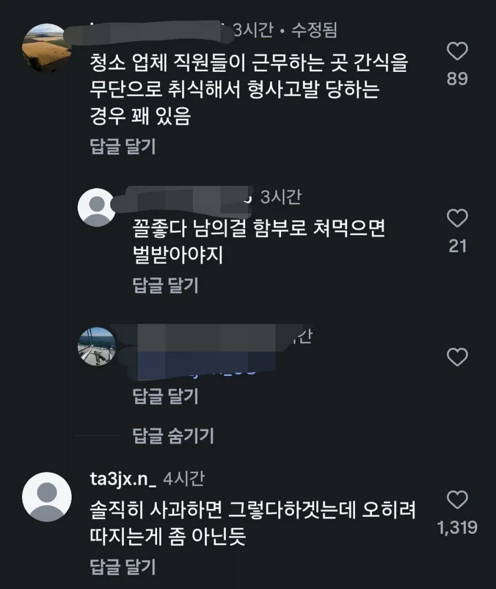
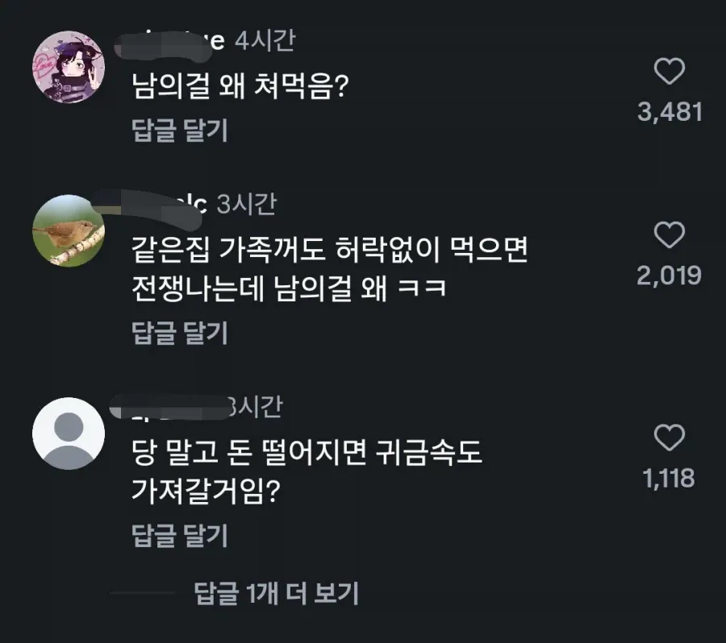

엄마뻘인 사람한테 그깟 양갱 가지고 어쩌구 하는건 의뢰인인 내가 생각해볼수 있는 말이지
청소하러 왔으면 청소나하셔




엄마뻘인 사람한테 그깟 양갱 가지고 어쩌구 하는건 의뢰인인 내가 생각해볼수 있는 말이지
청소하러 왔으면 청소나하셔
뭐 그깟거일순있는데 우리는 남이잖아요
평소에도 당이 떨어질거같으면 사탕같은걸 들고다니던가 ㅋㅋ
남의 물건 손대는건 범죄임
걍 범죄자 아줌마잖아
그깟 거리면 사실
선생님 말대로 그깟거 때문에 날세우지 마시고 그냥 보상을 해주세요
그깟거 그냥 돈으로 치워버리면 저 상대할 필요도 없이 얼마나 편하고 깔끔합니까
이 말을 한 네다섯번 반복해서 말하면 주던데?
ㅋㅋㅋㅋㅋ 현명하군
타인의 물건의 가치를 저평가하여 자신의 잘못을 합리화하려는 언행이 괘씸한 것이지
특별히 나쁜 마음 품어서 그러는게 아니라
일이 힘들면 넋이 나가서 그냥 손이 나갈 때가 있음.. 나도 고기 굽다가 손님들이랑 같이 먹은 적 있음..


돼지
말 없이 법으로 때리지 않은 것 만으로도 충분히 좋게 이야기 한 건데 저기서 ㅋㅋ
저런 이상한사람들이 일하는곳이 노인용역계지.. 청소 경비
좋은사람도 대다수지만 저런 몰상식한사람도 섞여있음
스펙좋은사람들도 나이들어서 일하다가 저런사람들이랑 엮이고 신세계 체험하고 혀차고 나감. ㅋㅋㅋㅋ
정말 힘들엇다면 뭐 그럴수도 있겠다 싶은데
0. 청소 하루이틀 하는거 아닐텐데 진작 간식 챙기고 다니던가
1. 먹을거면 물어보고 먹던가
2. 먹고나서 욕먹으면 미안하다고 하던가
이 거름망을 다 통과한 사람은 걍 양심이 없다고 보는게 맞다
그럴 수가 없음
저거 비슷한걸로 법원까지 간게 초코파이 절도 사건이잖아. 협력업체 직원이 허락도 없이 탕비실 들어와서 냉장고에서 초코파이랑 카스타드 꺼내 먹은거때문에 1심에서 벌금 5만원 맞고 항소까지 갔던걸로 기억함
저거 일일 방문 청소 그거같은데
거기서 오는 사람들도 일당 알바같은 사람이라 별 그지같은 사람들 많다더라
나도 저거 당해봄. 냉장고에 코스트코 초코렛간식 항상 넣어놨는데 갯수가 금방 줄길래 CCTV 확인해보니 새벽마다 청소하는 사람이 냉장고 열어서 가져가더라. 심지어 냉장고도 내 개인냉장고였는데 ㅋㅋ
도둑질
어떤 일이든 그렇지만 돈을 받고 남의 공간에서 서비스를 하는데 남의 물건에 손을 대면
뭘 믿고 일을 맡길 수 있겠음 사소한걸 떠나서 신뢰의 문제임